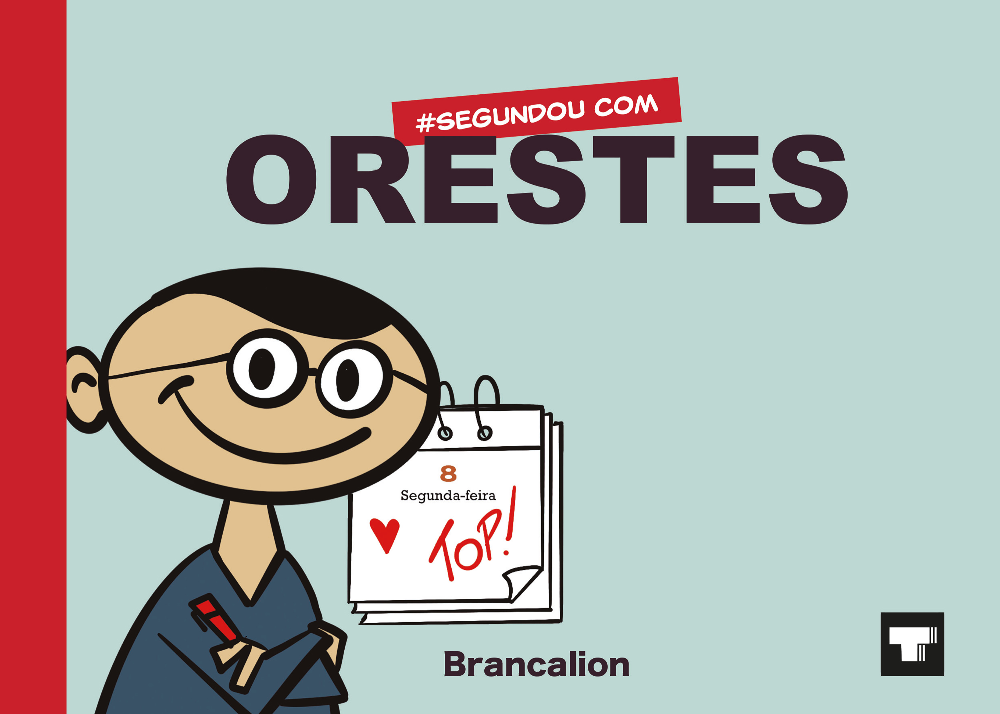

#Segundou com Orestes
Autor: Brancalion
“O tal do cara que gosta das segundas”, sim, este é o Orestes... a temível Segunda-feira chegou?! PRa ele não! Orestes tem verdadeira paixão pelo primeiro dia da semana, pra ele, segunda-feira não é o tradicional dia do mau humor, o dos inícios difíceis ou da triste realidade que o fim de semana se foi... é dia de #segundou na melhor vibe e bom humor! Neste livro estão reunidas 52 tiras publicadas ao longo do ano de 2022/2023 no Portal Sorocaba e no Instagram oficial @segundoucomorestes.
Adquira o seu